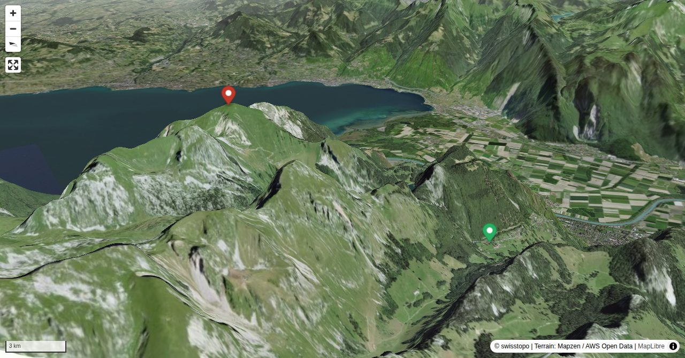

Deux mondes différents s'offrent à notre vue le long de cette arête effilée: le fourmillement du développement économique côté Chablais et la sérénité régnant à Taney et ses pâturages alentours. Appelé anciennement Chauméni ou Chaumagny, Grammont paraît être la reprise du nom latin grandis mons = la haute montagne, qui figure dans un acte de l'an 1306. La vue plongeante sur le Léman que l'on domine de 1800 m en fait un magnifique belvédère incontournable.
Passage pour accéder au petit hameau de Taney (pensions et auberges), situé au bord d'un lac sans écoulement, d'une trentaine de mètres de profondeur; site pittoresque placé sous la protection du canton.
Quick Facts
| Summit elevation | 2160 m |
|---|---|
| Difficulty | SAC T4 Alpine hiking with exposure, rougher terrain, and sections that are not suitable for beginners. Guide |
| Trailhead | Miex, Le Flon |
| Region | Western Central Alps |
| Canton | Valais |
| Distance | 10.3 km (out-and-back) |
| Total ascent | ~1155 m |
| Elevation range | 1046-2159 m |
| Route sources | SAC Route Portal |
Photos


Planning
i
i
sac_scale (precise T1–T6) with
swissTLM3D Wanderwegart
fallback where OSM is silent (coarser T2/T3 and T4+ buckets).
Coverage: OSM 99.1% · swisstopo 0.0% · unknown 0.0%.Elevations computed from the inlined GPX track (SwissTopo height API).
Loading forecast…
Start: Miex, Le Flon (1046 m)
Route returns to Miex, Le Flon.
3D Terrain View

Route Details
Par l'arête SE
Terrain & safety
Chaussures de marche à bon profil. A parcourir par terrain sec.
Source: SAC Route Portal
Field Reference
| Trailhead | Miex, Le Flon | 46.33790, 6.85170 |
|---|---|---|
| Summit | Le Grammont (2160 m) | 46.35746, 6.82120 |
Coordinates are WGS84 decimal degrees (lat, lon). Emergency: 112 (general) or 1414 (Rega air rescue). Page URL: